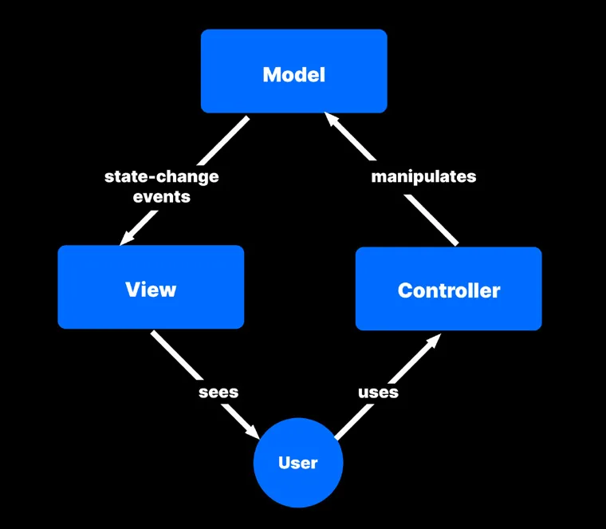
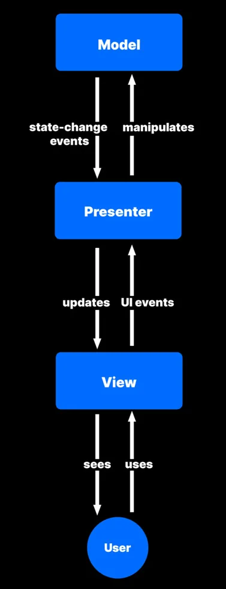
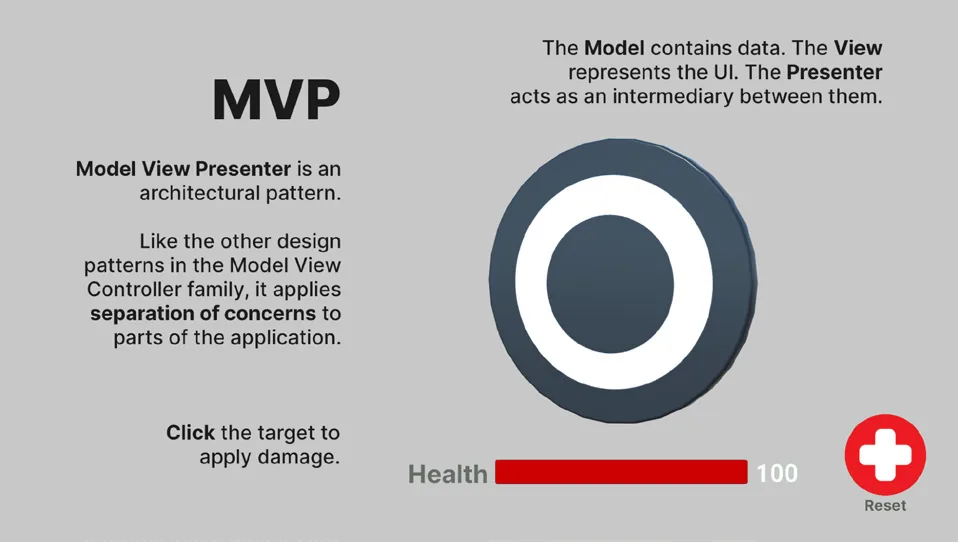

模型-视图-展示器（Model View Presenter，MVP）
模型-视图-控制器（Model View Controller，MVC）是一类在设计用户界面时常用的设计模式家族。
MVC 背后的总体思想，是把软件中的逻辑部分与数据、与呈现分离开来。这有助于减少不必要的依赖，并有可能减少纠缠不清的意大利面式代码。
模型-视图-控制器（MVC）设计模式

顾名思义，MVC 模式将应用程序拆分为三个层次：
- 模型（Model）存储数据：模型严格来说只是一个保存数值的数据容器。它不执行玩法逻辑，也不进行运算。
- 视图（View）是界面：视图在屏幕上对数据做格式化并渲染出图形化的呈现。
- 控制器（Controller）处理逻辑：可以把它看作大脑。它处理游戏数据，并计算这些数值在运行时如何变化。
模型、视图与控制器

这种关注点分离还具体定义了这三个部分之间如何相互作用。模型管理应用数据，而视图把该数据展示给用户。控制器处理输入，并对游戏数据做出各种决策或运算，随后把结果送回模型。
因此，控制器本身并不包含任何游戏数据，视图也不包含。MVC 设计限定了每一层能做什么：一个部分保存数据，另一个部分处理数据，最后一个部分把数据展示给用户。
从表面上看，你可以把它理解为单一职责原则（single-responsibility principle）的一种延伸。每个部分只做一件事，并且把它做好——这正是 MVC 架构的优点之一。
模型-视图-展示器（MVP）与 Unity
在使用 MVC 开发 Unity 项目时，现有的 UI 框架（无论是 UI Toolkit 还是 Unity UI）天然就可以充当视图。因为引擎已经提供了完整的用户界面实现，你无需从零开始开发各个 UI 组件。
不过，如果遵循传统的 MVC 模式，就需要编写视图专属的代码，在运行时监听模型数据的变化。
虽然这是一种可行的做法，但许多 Unity 开发者选择使用 MVC 的一种变体：由控制器充当中间人。在这种做法中，视图并不直接观察模型，而是按如下方式工作：
这种 MVC 变体被称为模型-视图-展示器设计，即 MVP。
MVP 依然通过三个界限分明的应用层来保持关注点分离。不过，它略微改变了每个部分的职责。
在 MVP 中，展示器（Presenter，在 MVC 里被称为控制器）充当其他各层之间的中间人。它从模型获取数据，然后为在视图中展示而格式化这些数据。MVP 调换了由哪一层来处理输入：视图而不是控制器，负责处理用户输入。

注意事件和观察者模式（observer pattern）在这个设计中是如何发挥作用的。用户可以操作 Unity UI 的 Button、Toggle 和 Slider 组件。视图层通过 UI 事件把输入回传给展示器，展示器则反过来操作模型。模型发出的状态变更事件会告知展示器数据已经更新。展示器再把修改后的数据传给视图，由视图刷新 UI。
示例：生命值接口
为了把 MVP 的示例具体化，设想一个用于显示角色或道具生命值的简单系统。你完全可以把所有东西都塞进一个混杂了数据和 UI 的类里，但那样的扩展性很差。随着你需要扩展功能，添加更多功能会变得越来越复杂。
相反，你可以用更贴近 MVP 的思路重写生命值相关组件。把脚本拆分为 Health 和 HealthPresenter。Health 组件可以写成这样：
public class Health: MonoBehaviour
{
public event Action HealthChanged;
private const int minHealth = 0;
private const int maxHealth = 100;
private int currentHealth;
public int CurrentHealth { get => currentHealth; set => currentHealth = value; }
public int MinHealth => minHealth;
public int MaxHealth => maxHealth;
public void Increment(int amount)
{
currentHealth += amount;
currentHealth = Mathf.Clamp(currentHealth, minHealth, maxHealth);
UpdateHealth();
}
public void Decrement(int amount)
{
currentHealth -= amount;
currentHealth = Mathf.Clamp(currentHealth, minHealth, maxHealth);
UpdateHealth();
}
public void Restore()
{
currentHealth = maxHealth;
UpdateHealth();
}
public void UpdateHealth()
{
HealthChanged?.Invoke();
}
}在这个版本中，Health 充当模型。它保存实际的生命值，并在该数值每次变化时调用事件 HealthChanged。Health 不包含玩法逻辑，只有对数据做增减的方法。
不过，大多数对象并不会直接操作 Health 本身。你会把这项任务留给 HealthPresenter：
public class HealthPresenter : MonoBehaviour
{
[SerializeField] Health health;
[SerializeField] Slider healthSlider;
private void Start()
{
if (health != null)
{
health.HealthChanged += OnHealthChanged;
}
UpdateView();
}
private void OnDestroy()
{
if (health != null)
{
health.HealthChanged -= OnHealthChanged;
}
}
public void Damage(int amount)
{
health?.Decrement(amount);
}
public void Heal(int amount)
{
health?.Increment(amount);
}
public void Reset()
{
health?.Restore();
}
public void UpdateView()
{
if (health == null)
return;
if (healthSlider !=null && health.MaxHealth != 0)
{
healthSlider.value = (float) health.CurrentHealth / (float) health.MaxHealth;
}
}
public void OnHealthChanged()
{
UpdateView();
}
}其他 GameObject 需要使用 HealthPresenter，通过 Damage、Heal 和 Reset 来修改生命值。在 Health 触发其 HealthChanged 事件之前，HealthPresenter 通常不会调用 UpdateView 去更新用户界面。如果设置模型中的数值需要一段较短的时间（例如把数值保存到磁盘或存进数据库），这种做法很有用。
在示例项目中，用户可以点击按钮来对目标对象造成伤害，或重置生命值。这些操作通知的是 HealthPresenter（由它调用 Damage 或 Reset），而不是直接修改 Health。当 Health 触发事件并通知 HealthPresenter 其数值已发生变化时，UI Text 和 UI Slider 才会更新。
优点与缺点
MVP（以及 MVC）在较大的应用中才真正大放异彩。如果你的游戏需要一支规模可观的团队来开发，并且你预期在发布后还要长期维护它，那么你可能会从以下方面受益：
- 顺畅的分工：由于你把视图与展示器分离开来，用户界面的开发和更新几乎可以与代码库的其余部分独立进行。这让你可以在专门的开发者之间分配工作。团队里是否有专业的前端开发者？让他们负责视图。他们可以独立于其他所有人开展工作。
- 用 MVP 和 MVC 简化单元测试：这些设计模式把玩法逻辑与用户界面分离开来。因此，你可以模拟对象来配合代码进行测试，而不必真正进入编辑器的播放模式（Play mode）。这能节省相当多的时间。
- 代码可读且易于维护：使用这种设计模式时，你往往会写出更小的类，这让它们更易阅读。更少的依赖通常意味着软件出错的地方更少，可能藏有 bug 的地方也更少。
尽管 MVC 和 MVP 在 Web 开发或企业级软件中非常普遍，但其好处通常要等到应用达到足够的规模和复杂度时才会显现。在你的 Unity 项目中实现任一模式之前，需要考虑以下几点：
- 你需要提前规划：与本指南中介绍的其他模式不同，MVC 和 MVP 是更大型的架构模式。要使用其中之一，你需要按职责拆分类，这需要一定的组织工作，并在前期投入更多精力。
- 并非 Unity 项目中的所有东西都适合该模式：在“纯粹”的 MVC 或 MVP 实现中，任何渲染到屏幕上的东西确实都属于视图的一部分。但并非每个 Unity 组件都能轻易地在数据、逻辑和界面之间拆分（例如 MeshRenderer）。此外，简单的脚本很可能无法从 MVC/MVP 中获得多少好处。你需要做出判断，确定在哪些地方最能从该模式中获益。通常，你可以让单元测试来引导你。如果 MVC/MVP 有助于测试，就针对应用的这一部分考虑使用它们。否则，不要试图把该模式强加到你的项目上。